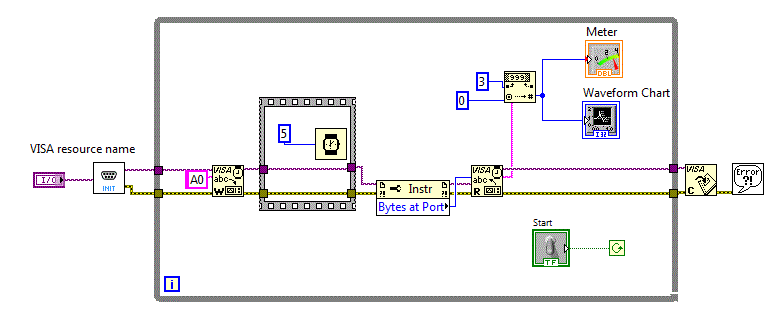

LabVIEW dispune de o serie de functii care se refera la sirurile de caractere, functii similare cu functiile intalnite in
alte medii de programare.
Functiile referitoare la sirurile de caractere sunt importante atat pentru manipularea textelor cat si pentru a realiza
transferuri de date intre aplicatii sau diverse echipamente unde datele sunt codificate utilizand siruri de caractere.
Introducerea si afisarea sirurilor de caractere.
Vom realiza pentru inceput, o aplicatie sir_v0
in care sa va introduce un text utilizand un "String Control" dupa care se va afisa textul utilizand un "String Indicator", controlale incliuse in
Controls-->Modern--> String & Path.
Pentru introducerea sirului de caractere, s-a utilizat deci un control "String Control" caruia i s-a setat proprietatea
"Limit to single line" pentru a nu permite introducerea de mai multe linii in cadrul controlului. Afisarea se face utilizand un control "String Indicator"
Afisarea se face numai dupa ce se tasteaza "Enter" sau se apasa "Click stanga inafara controlului "String Control".
Diagrama bloc a acestei aplicati fiind:
Urmatoarea aplicatie sir_v1 , afiseaza instantaneu caracterele
introduse prin simpla setare a proprietatii "Update value while typing" aferenta controlului "String Control" utilizat pentru introducerea textului.
In aplicatiile urmatoare, proprietatea "Update value while typing" va fi tot timpul setata.
Transformarea minusculelor in majuscule
Vom folosi in continuare functia "To Upper Case" afalta in Programming-->String-->To Upper Case pentru a realiza aplicatia:
sir_v2 in care minusculele unui sir introdus vor fi transformate in majuscule si aploi afisate.
In diagrama bloc se poate vedea utilizarea functiei:"To Upper Case"
Determinarea lungimii unui sir de caractere - String Length
Determinarea lungimii unui sir de caractere este des utilizata in aplicatiile care contin siruri de caractere. Urmatoarea
aplicatie sir_v3 afiseaza in mod continuu lungimea unui sir de caractere introdus.
In diagrama bloc se poate vedea utilizarea functiilor "To Upper Case" si "String Length":
Concatenarea sirurilor - Concatenate Strings
Functia pentru concatenarea sirurilor - Concatenate Strings este utilizata in aplicatia urmatoare:
sir_v4 pentru a lega doua siruri.
In diagrama bloc se poate vedea utilizarea functiilor "Concatenate Strings" si "String Length":
Cautarea unui subsir in cadrul unui sir de caractere
Functia pentru cautarea unui subsir in cadrul unui sir de caractere "Match Pattern" sta la baza urmatoarei aplicatii:
sir_v5
In diagrama bloc se va utiliza functia "Match Pattern" pentru a cauta un subsir.
O alta functie utilizata pentru cautarea unui subsir este functia: "Search/Split String" aflata in Programming-->
String-->Aditional String Functions-->Search/Split String . Aceasta functie, va fi utilizata in
aplicatia: sir_v6 pentru a ne furniza pozitia subsirului cautat.
Diagrama bloc fiind:
Extragerea unui subsir din cadrul unui sir de caractere
Exista cazuri in care trebuie sa extragem un subsir de anumita dimensiune din cadrul unui sir de caractere incepand cu
o anumita pozitie. Functia potrivita pentru acest caz fiind: "String Subset". Urmatoarea aplicatie, foloseste aseasta functie.
Diagrama bloc fiind:
Conversia unui sir de caractere intr-un numar
Aplicatiile care realizeaza transferuri de date intre aplicatii sau diverse echipamente se bazeaza pe transferul de
siruri de caractere care codifica datele. In cazul in care sunt transmise numere sub forma de siruri de caractere, avem nevoie de fuunctii care sa
transforme un sir de caractere intr-un numar. Exista o serie de functii care transforma sirurile de caractere in numere in diverse tipuri si diverse
formate. Vom utiliza functia:"Decimal String to Number" situata in Programming-->String-->Srting/Number Conversion-->Decimal String to Number
Diagrama bloc fiind:
Vehicularea sirurilor de caractere prin intermediul portului serial
Portul serial a fost utilizat pentru a realiza prima legatura intre doua calculatoare. Portul serial este des
utilizat si in prezent pentru a conecta diverse dispozitive la calculator. Chiar daca majoritatea calculatoarelor nu mai dispun fizic de un port serial,
se utilizeaza des porturi seriale virtuale, realizate prin intermediul portului USB (Universal Serial Bus). Cu alte cuvinte exista o serie de dispozitive
conectate la calculator prin intermediul USB insa din punct de vedere logic ele sunt conectate printr-un port serial virtual. Pentru programator, aceasta
conectare este identica cu o conectare prin intermediul unui port serial fizic. Conectarea prin intermediul portului USB fiind deci "transparenta" din
punctul de vedere al scrierii aplicatiilor, acestea fiind scrise la fel cu aplicatiile pentru portul serial.
Configurarea si initializarea portului serial
Pentru a putea fi utilizat, portul serial trebuie configurat, cu alte cuvinte trebuiesc stabilite valorile pentru diversi
parametri, cum ar fi: viteza de lucru, lungimea cuvantului, paritate etc.
Aplicatia: serial_00 permite dialogul cu un sistem de achizitie
conectat prin intermediul portului USB. Sistemul dispune de 5 intrari analogice, 8 iesiri digitale si 4 intrari digitale. Comanda pentru citirea unei
intrari analogice este:Ai unde i=0..4, comanda pentru inscrierea celor 9 iesiri digitale este On unde n este numarul in zecimal care va fi afisat in
binar pe cele 8 iesiri digitale si in sfarsit comanda D1 pentru citirea unui numar zecimal care codifica cele 4 intrari digitale.
Pentru a utiliza portul serial, s-a utilizat functia "Visa configure port serial" plasata in grupul:
Functions-->InstrumentI/O-->Serial-->VISA configure Port Serial
Similar, pentru a utiliza scrie, respectiv citidre la serial, s-au utilizat functiile:
"Visa write port serial" respectiv "Visa read port serial" plasate in grupul: Functions-->InstrumentI/O-->Serial-->VISA
Utilizarea portului serial
Sa presupunem ca vrem sa afisam continuu intrarea analogica A0. Realizam astfel aplicatia :
serial_01 in care se afiseaza grafic intrarea analogica A0.
In diagrama blog se va folosi constanta de tip sir de caractere A0
Raspunsul sistemului de achizitie la comanda A0 este un sir de forma: A0,val. Va trebui sa separam subsirul val si
sa-l convertim intr-o valoare numerica. Pentru aceasta, s-a folosit functia "Decimal String to Number" plasata in grupul
Function-->String-->String Number Conversion-->Decimal String to Number in care s-a setat Offset-ul la 3 adica opzitia de unde incepe sirul "val"
Dupa cum se observa, diagramele bloc devin tot mai complicate, asa ca este necesara realizarea unor "SubVI-uri"
Urmatoarea aplicatie serial_02 utilizeaza SubVI-ul
init_ser . Diagrama bloc devenind:

Putem merge mai departe realizand urmatoarea aplicatie serial_03
car include SubVI-ul wr_rd_ser pentru scrierea si citirea unui sir la portul serial.
Diagrama bloc devenind:
Chiar si inchiderea portului serial poate fi incapsulata in SubVI-ul close_rd_ser
si obtinem aplicatia serial_04 a carei diagrama bloc este:
Citirea intrarilor analogice
Sa presupunem ca sistemul de achizitie dispune de comanda AA care permite citirea tuturor intrarilor analogice. Raspunsul
sistemului la comanda AA fiind AA,val0,val1,val2,val3,val4.
Pentru a interpreta fiecare vasloare trebuie sa utilizam o serie de functii pe sirurile de caractere.
Urmatoaea aplicatie serial_05 interpreteaza sirul transmis si
separa fiecare valoare transmisa.
Diagrama bloc va utiliza functia:"Search/Split String" pentru a separa sisurile necesare.
Utilizarea fisierelor text
LabVIEW dispune de o serie de functii care se refera la utilizarea fisierelor text.
Functiile referitoare la utilizarea fisierelor sunt grupate in Functions-->Programming-->File I/O.
Citirea unui fisier text
Pentru citirea datelor aflate intr-un fisier text va trebui sa utilizam un control care sa permita localizarea fisierului
dupa care sa utilizam o functie pentru citirea dintr-un fisier text. Textul citit va fi afisat intr-un control de tip text. Vezi aplicatia
Dupa cum se observa pe panoul frontal, pentru selectarea fisierului, s-a plasat un control de tip "Path" dispus in grupul
Controls-->Modern-->String & Pats-->File Path Control
Pentru citirea datelor aflate intr-un fisier se va folosi functia "Read from Text File" aflata in Functions-->Programming-->File I/O-->
Read from Text File.
Este important ca dupa citirea unui text, acesta sa fie prelucrat. In cazul in care fisierul text contine informatii
dispuse in mai multe randuri si fiecare rand cantine mai multe campuri, este important ca textul sa fie trecut intr-un tablou.
Urmatoarea aplicatie fisiere_v1 stocheaza fiecare rand din text
intr-un vector de tip text.
Pentru a separa fiecare rand din textul citit si pentru a-l memora intr-un vector se vor folosi functii pentru siruri de caractere.
In cazul in care fiecare rand text contine mai multe campuri de informatie, vom utiliza o matrice pentru stocarea datelor citite
din fisier. fisiere_v2
Identificarea fiecarui canmp se face cautand caracterul "Tab" care delimiteaza campurile.
In aplicatiile anterioare, am presupus cunoscut numarul de linii din fisier. In practica acest numar trebuie determinat
inainte de citirea datelor din fisier. Urmatoarea aplicatie fisiere_v3 determina numarul de
linii dintr-un fisier text.
Diagrama bloc fiind:
Scrierea intr-un fisier text
Pentru scrierea datelor aflate intr-un fisier text va trebui sa utilizam un control care sa permita localizarea fisierului
dupa care sa utilizam o functie pentru scrierea intr-un fisier text. Textul scris va fi preluat dintr-un control de tip text. Vezi aplicatia
Urmatoarea aplicatie preia textul dintr-un tablou.
fisiere_v6 .
Diagrama bloc fiind:
Aplicatie preia textul din tablou dar nu respecta campurile. Urmatoarea aplicatie
fisiere_v7 , corecteaza deficienta, tinand cont de campurile din tablou.